에너지관리기사 (2016-03-06 기출문제)
1과목: 연소공학
1. 연돌의 높이 100m, 배기가스의 평균온도 210℃, 외기온도 20℃, 대기의 비중량 γ1=1.29kg/Nㆍm3, 배기가스의 비중량 γ2=1.35 kg/Nm3일 때, 연돌의 통풍력은?
- 15.9 mmH2O
- 16.4 mmH2O
- 43.9 mmH2O
- 52.7 mmH2O
(정답률: 42%)

2. 유압분무식 버너의 특징에 대한 설명으로 틀린 것은?
- 유량 조절 범위가 좁다.
- 연소의 제어범위가 넓다.
- 무화매체인 증기나 공기가 필요하지 않다.
- 보일러 가동 중 버너교환이 가능하다.
(정답률: 62%)
3. 어떤 연료를 분석한 결과 탄소(C), 수소(H), 산소(O), 황(S) 등으로 나타낼 때 이 연료를 연소시키는데 필요한 이론 산소량을 구하는 계산식은? (단, 각 원소의 원자량은 산소 16, 수소 1, 탄소 12, 황 32이다.)
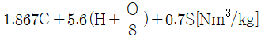
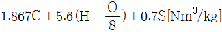
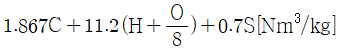
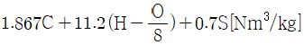
(정답률: 82%)
4. 세정식 집진장치의 집진형식에 따른 분류가 아닌 것은?
- 유수식
- 가압수식
- 회전식
- 관성식
(정답률: 60%)
5. 공기비(m)에 대한 식으로 옳은 것은?
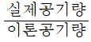
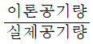
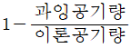
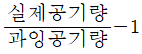
(정답률: 83%)
6. 중유 연소과정에서 발생하는 그을음의 주된 원인은?
- 연료 중 미립탄소의 불완전연소
- 연료 중 불순물의 연소
- 연료 중 회분과 수분의 중합
- 연료 중 파라핀 성분 함유
(정답률: 82%)
7. 연료 조성이 C : 80%, H2: 18%, O2 : 2%인 연료를 사용하여 10.2%의 CO2가 계측되었다면 이 때의 최대 탄산가스율은? (단, 과잉공기량은 3 Nm3/kg이다.)
- 12.78%
- 13.25%
- 14.78%
- 15.25%
(정답률: 31%)
8. 다음과 같은 조성을 가진 액체 연료의 연소 시 생성되는 이론 건연소가스량은?
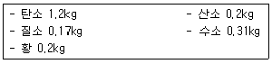
- 13.5Nm3/kg
- 17.5Nm3/kg
- 21.4Nm3/kg
- 29.4Nm3/kg
(정답률: 46%)
9. 상당 증발량이 0.⑤ ton/min의 보일러에 5800kcal/kg의 석탄을 태우고자 한다. 보일러의 효율이 87% 이라 할 때 필요한 화상 면적은? (단, 무연탄의 화상 연소율은 73 kg/m2ㆍh이다.)
- 2.3m2
- 4.4m2
- 6.7m2
- 10.9m2
(정답률: 58%)
10. 탄소(C) 1/12kmol을 완전연소 시키는데 필요한 이론 산소량은?
- 1/12kmol
- 1/2kmol
- 1kmol
- 2kmol
(정답률: 74%)
11. CH4 가스 1Nm3을 30% 과잉공기로 연소시킬 때 실제 연소가스량은?(오류 신고가 접수된 문제입니다. 반드시 정답과 해설을 확인하시기 바랍니다.)
- 2.38 Nm3/kg
- 13.36 Nm3/kg
- 23.1 Nm3/kg
- 82.31 Nm3/kg
(정답률: 50%)
12. 각종 천연가스(유전가스, 수용성가스, 탄전가스 등)의 주성분은?
- CH4
- C2H6
- C3H8
- C4H10
(정답률: 84%)
13. 질소산화물을 경감시키는 방법으로 틀린 것은?
- 과잉공기량을 감소시킨다.
- 연소온도를 낮게 유지한다.
- 로 내 가스의 잔류시간을 늘려준다.
- 질소성분을 함유하지 않은 연료를 사용한다.
(정답률: 63%)
14. 보일러의 연소장치에서 NOx의 생성을 억제할 수 있는 연소방법으로 가장 거리가 먼 것은?
- 2단 연소
- 배기의 재순환 연소
- 저산소 연소
- 연소용 공기의 고온예열
(정답률: 69%)
15. 분자식이 CmHn인 탄와수소가스 1Nm3을 완전 연소시키는데 필요한 이론 공기량(Nm3)은? (단, CmHn의 m, n은 상수이다.)
- 4.76m+1.19n
- 1.19m+4.7n
- m+n/4
- 4m+0.5n
(정답률: 68%)
16. 중유를 A급, B급, C급으로 구분하는 기준은?
- 발열량
- 인화점
- 착화점
- 점도
(정답률: 81%)
17. 전기식 집진장치에 대한 설명 중 틀린 것은?
- 포집입자의 직경은 30~50μm 정도이다.
- 집진효율이 90~99.9%로서 높은 편이다.
- 고전압장치 및 정전설비가 필요하다.
- 낮은 압력손실로 대량의 가스처리가 가능하다.
(정답률: 83%)
18. 석탄가스에 대한 설명으로 틀린 것은?
- 주성분은 수소와 메탄이다.
- 저온건류 가스와 고온건류 가스로 분류된다.
- 탄전에서 발생되는 가스이다.
- 제철소의 코크스 제조 시 부산물로 생성되는 가스이다.
(정답률: 58%)
19. 석탄을 분석한 결과가 아래와 같을 때 연소성 황은 몇 %인가?
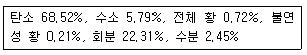
- 0.82%
- 0.70%
- 0.65%
- 0.53%
(정답률: 32%)
20. 배기가스 중 O2의 계측값이 3%일 때 공기비는? (단, 완전연소로 가정한다.)
- 1.07
- 1.11
- 1.17
- 1.24
(정답률: 60%)
2과목: 열역학
21. 피스톤이 장치된 단열 실린더에 300kpa, 건도 0.4인 포화액-증기 혼합물 0.1kg이 들어있고 실린더 내에는 전열기가 장치되어 있다. 220V의 전원으로부터 0.5A의 전류를 10분동안 흘려보냈을 때 이 혼합물의 건도는 약 얼마인가? (단, 이 과정은 정압과정이고 300kpa에서 포화액의 엔탈피는 561.43/kg 이고 포화증기의 엔탈피는 2724.9kJ/kg이다.)
- 0.7⑤
- 0.642
- 0.601
- 0.442
(정답률: 32%)
22. 피스톤과 실린더로 구성된 밀폐된 용기 내에 일정한 질량의 이상기체가 차 있다. 초기상태의 압력은 2atm, 체적은 0.5m3이다. 이 시스템의 온도가 일정하게 유지되면서 팽창하여 압력이 1atm이 되었다. 이 과정 동안에 시스템이 한 일은 몇 kJ인가?
- 64
- 70
- 79
- 83
(정답률: 44%)
23. 랭킨 사이클로 작동되는 발전소의 효율을 높이려고 할 때 증기터빈의 초압과 배압은 어떻게 하여야 하는가?
- 초압과 배압 모두 올림
- 초압을 올리고 배압을 낮춤
- 초압은 낮추고 배압을 올림
- 초압과 배압 모두 낮춤
(정답률: 71%)
24. 20mpa, 0℃의 공기를 100kpa로 교축(throtting)하였을 때의 온도는 약 몇 ℃인가? (단, 엔탈피는 20mpam 0℃에서 439kJ/kg, 100kpa, 0℃에서 485kJ/kg이고, 압력이 100kpa인 등압과정에서 평균비열은 1.0kJ/kgㆍ℃이다.)
- -11
- -22
- -36
- -46
(정답률: 34%)
25. 그림은 재생 과정이 있는 랭킨 사이클이다. 추기에 의하여 급수가 가열되는 과정은?
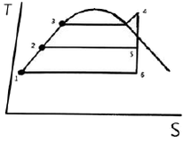
- 1-2
- 4-5
- 5-6
- 7-8
(정답률: 68%)
26. 냉동사이클을 비교하여 설명한 것으로 잘못된 것은?
- 역 Carnot 사이클이 최고의 COP를 나타낸다.
- 가역팽창 엔진을 가진 증기압축 냉동사이클의 성능계수는 최고값에 접근한다.
- 보통의 증기압축 사이클은 역 Carnot 사이클의 COP보다 낮은 값을 갖는다.
- 공기 냉동사이클이 가장 높은 효율을 나타낸다.
(정답률: 63%)
27. 정압과정으로 5kg의 공기에 20kcal의 열이 전달되어, 공기의 온도가 10℃에서 30℃로 올랐다. 이 온도 범위에서 공기의 평균 비열(kJ/kgㆍK)을 구하면?
- 0.152
- 0.321
- 0.463
- 0.837
(정답률: 41%)
28. 증기 동력 사이클 중 이상적인 랭킨(Rankine)사이클에서 등엔트로피 과정이 일어나는 곳은?
- 펌프, 터빈
- 응축기, 보일러
- 터빈, 응축기
- 응축기, 펌프
(정답률: 64%)
29. Otto Cycle에서 압축비가 8일 때 열효율은 약 몇 %인가? (단, 비열비는 1.4이다.)
- 26.4
- 36.4
- 46.4
- 56.4
(정답률: 49%)
30. 이상기체의 상태변화와 관련하여 폴리트로피(Polytropic) 지수 n에 대한 설명 중 옳은 것은?
- n=0이면 단열 변화
- n=1이면 등온 변화
- n=비열비이면 정적 변화
- n=∞이면 등압 변화
(정답률: 72%)
31. 비열이 0.473kJ/kgㆍK인 철 10kg의 온도를 20℃에서 80℃로 높이는 데 필요한 열량은 몇 kJ인가?
- 28
- 60
- 284
- 600
(정답률: 59%)
32. 냉동기의 냉매로서 갖추어야 할 요구조건으로 적당하지 않은 것은?
- 불활성이고 안정해야 한다.
- 비체적이 커야 한다.
- 증발온도에서 높은 잠열을 가져야 한다.
- 열전도율이 커야 한다.
(정답률: 69%)
33. 건조 포화증기가 노즐 내를 단열적으로 흐를 때 출구 엔탈피가 입구 엔탈피보다 15kJ/kg만큼 작아진다. 노즐 입구에서의 속도를 무시할 때 노즐 출구에서의 속도는 약 몇 m/s인가?
- 173
- 200
- 283
- 346
(정답률: 49%)
34. 포화증기를 등엔트로피 과정으로 압축시키면 상태는 어떻게 되는가?
- 습증기가 된다.
- 과열증기가 된다.
- 포화액이 된다.
- 임계성을 띤다.
(정답률: 56%)
35. 어느 과열증기의 온도가 325℃일 때 과열도를 구하면 약 몇 ℃인가? (단, 이 증기의 포화 온도는 495K이다.)
- 93
- 103
- 113
- 123
(정답률: 62%)
36. 디젤사이클로 작동되는 디젤 기관의 각 행정의 순서를 옳게 나타낸 것은?
- 단열압축-정적급열-단열팽창-정적방열
- 단열압축-정압급열-단열팽창-정압방열
- 등온압축-정적급열-등온팽창-정적방열
- 단열압축-정압급열-단열팽창-정적방열
(정답률: 59%)
37. 다음 중 경로에 의존하는 값은?
- 엔트로피
- 위치에너지
- 엔탈피
- 일
(정답률: 60%)
38. 단열계에서 엔트로피 변화에 대한 설명으로 옳은 것은?
- 가역 변화시 계의 전 엔트로피는 증가된다.
- 가역 변화시 계의 전 엔트로피는 감소한다.
- 가역 변화시 계의 전 엔트로피는 변하지 않는다.
- 가역 변화시 계의 전 엔트로피의 변화량은 비가역 변화시보다 일반적으로 크다.
(정답률: 56%)
39. 20℃의 물 10kg을 대기압 하에서 100℃의 수증기로 완전히 증발시키는데 필요한 열량은 약 몇 kJ인가? (단, 수증기의 증발 잠열은 2257kJ/kg이고, 물의 평균비열은 4.2kJ/kgㆍK이다.)
- 800
- 6190
- 25930
- 61900
(정답률: 52%)
40. 다음 T-S 선도에서 냉동사이클의 성능계수를 옳게 표시한 것은? (단, u는 내부에너지, h는 엔탈피를 나타낸다.)
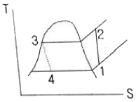
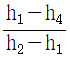
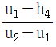
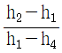
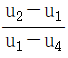
(정답률: 65%)
3과목: 계측방법
41. 가스분석계의 측정법 중 전기적 성질을 이용한 것은?
- 세라믹식 측정방법
- 연소열식 측정방법
- 자동 오르자트법
- 가스크로마토그래피법
(정답률: 65%)
42. 차압식 유량계의 측정에 대한 설명으로 틀린 것은?
- 연속의 법칙에 의한다.
- 플로트 형상에 따른다.
- 차압기구는 오리피스이다.
- 베르누이의 정리를 이용한다.
(정답률: 68%)
43. 다음 중 속도 수두 측정식 유량계는?
- Delta 유량계
- Annulbar 유량계
- Oval 유량계
- Thermal 유량계
(정답률: 63%)
44. 큐폴라 상부의 배기가스 온도를 측정하기 위한 접촉식 온도계로 가장 적합한 것은?
- 광고온계
- 색온도계
- 수은온도계
- 열전대온도계
(정답률: 62%)
45. 부르돈 게이지(Bourdon gauge)는 유체의 무엇을 직접적으로 측정하기 위한 기기인가?
- 온도
- 압력
- 밀도
- 유량
(정답률: 61%)
46. 저항온도계에 활용되는 측온저항체 종류에 해당되는 것은?
- 서미스터(thermistor)저항 온도계
- 철-콘스탄탄(IC) 저항 온도계
- 크로멘(chromel) 저항 온도계
- 알루멜(alumel) 저항 온도계
(정답률: 75%)
47. 비중량이 900kgf/m3이 ㄴ기름 18L의 중량은?
- 12.5kgf
- 15.2kgf
- 16.2kgf
- 18.2kgf
(정답률: 58%)
48. 보일러의 자동제어에서 인터록 제어의 종류가 아닌 것은?
- 압력초과
- 저연소
- 고온도
- 불착화
(정답률: 61%)
49. 다음은 증기 압력제어의 병렬 제어방식을 나타낸 것이다. ()안에 알맞은 용어를 바르게 나열한 것은?
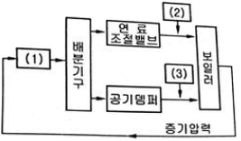
- (1)동작신호, (2)목표치, (3)제어량
- (1)조작량, (2)설정신호, (3)공기량
- (1)압력조절기, (2)연료공급량, (3)공기량
- (1)압력조절기, (2)공기량, (3)연료공급량
(정답률: 75%)
50. 열전대 온도계에서 열전대의 구비조건으로 틀린 것은?
- 장시간 사용하여도 변형이 없을 것
- 재생도가 높고 가공기 용이할 것
- 전기저항, 저항온도계수와 열전도율이 클 것
- 열기전력이 크고 온도상승에 따라 연속적으로 상승할 것
(정답률: 69%)
51. 절대압력 700mmHg는 약 몇 kpa인가?
- 93kpa
- 103kpa
- 113kpa
- 123kpa
(정답률: 64%)
52. 주위 온도보상 장치가 있는 열전식 온도기록계에서 주위온도가 20℃인 경우 1000℃의 지시치를 보려면 몇 mV를 주어야 하는가? (단, 20℃ : 0.80mV, 980℃ : 40.53mV, 1000℃ : 41.31mV이다.)
- 40.51
- 40.53
- 41.31
- 41.33
(정답률: 40%)
53. 세라믹(Ceramic)식 O2 계의 세라믹 주원료는?
- Cr2O3
- Pb
- P2O5
- ZrO2
(정답률: 71%)
54. 관속을 흐르는 유체가 층류로 되려면?
- 레이놀즈수가 4000보다 많아야 한다.
- 레이놀즈수가 2100보다 적어야 한다.
- 레이놀즈수가 4000이어야 한다.
- 레이놀즈수와는 관계가 없다.
(정답률: 80%)
55. 열전대 온도계에서 주위 온도에 의한 오차를 전기적으로 보상할 때 주로 사용되는 저항선은?
- 서미스터(thermistor)
- 구리(Cu) 저항선
- 백금(Pt) 저항선
- 알루미늄(Al) 저항선
(정답률: 45%)
56. 다음 중 방사고온계는 어느 이론을 응용한 것인가?
- 제백 효과
- 필터 효과
- 윈-프랑크 법칙
- 스테판-볼프만 법칙
(정답률: 70%)
57. 진동ㆍ충격의 영향이 적고, 미소 차압의 측정이 가능하며 저압가스의 유량을 측정하는데 주로 사용되는 압력계는?
- 압전식 압력계
- 분동식 압력계
- 침종식 압력계
- 다이아프램 압력계
(정답률: 54%)
58. 다음 중 열전대 보호관 재질 중 상용 온도가 가장 높은 것은?
- 유리
- 자기
- 구리
- Ni-Cr 스테인리스
(정답률: 68%)
59. U자관 안력계에 관한 설명으로 가장 거리가 먼 것은?
- 차압을 측정할 경우에는 한 쪽 끝에만 압력을 가한다.
- U자관의 크기는 특수한 용도를 제외하고는 보통 2m 정도로 한다.
- 관 속에 수은, 물 등을 넣고 한 쪽 끝에 측정압력을 도입하여 압력을 측정한다.
- 측정 시 메니스커스, 모세관현상 등의 영향을 받으므로 이에 대한 보정이 필요하다.
(정답률: 66%)
60. 압력식 온도계가 아닌 것은?
- 액체 팽창식
- 전기 저항식
- 기체 압력식
- 증기 압력식
(정답률: 71%)
4과목: 열설비재료 및 관계법규
61. 다음 중 MgO-SiO2 계 내화물은?
- 마그네시아질 내화물
- 돌로마이트질 내화물
- 마그네시아-크롬질 내화물
- 포스테라이트질 내화물
(정답률: 62%)
62. 보일러 유효기간 만료일이 9월 1일 이후인 경우 연기할 수 있는 최대 기한은?
- 2개월 이내
- 4개월 이내
- 6개월 이내
- 10개월 이내
(정답률: 64%)
63. 보온재의 열전도율과 체적 비중, 온도, 습분 및 기계적 강도와의 관계에 관한 설명으로 틀린 것은?
- 열전도율은 일반적으로 체적 비중의 감소와 더불어 적어진다.
- 열전도율은 일반적으로 온도의 상승과 더불어 커진다.
- 열전도율은 일반적으로 습분의 증가와 더불어 커진다.
- 열전도율은 일반적으로 기계적 강도가 클수록 커진다.
(정답률: 59%)
64. 에너지이용 합리화 기본계획은 산업통상 자원부장관이 몇 년마다 수립하여야 하는가?
- 3년
- 4년
- 5년
- 10년
(정답률: 77%)
65. 한국에너지공단의 사업이 아닌 것은?
- 신에너지 및 재생에너지 개발사업의 촉진
- 열사용기자재의 안전관리
- 에너지의 안정적 공급
- 집단에너지 사업의 촉진을 위한 지원 및 관리
(정답률: 57%)
66. 에너지이용 합리화법에 따라 검사대상기기 설치자는 검사대상기기조종자를 선임하거나 해임한 때 산업통상자원부령에 따라 누구에게 신고하여야 하는가?
- 시ㆍ도지사
- 시장ㆍ군수
- 경찰서장ㆍ소방서장
- 한국에너지공단이사장
(정답률: 65%)
67. 다음 마찰 손실 중 국부 저항손실수두로 가장 거리가 먼 것은?
- 배관중의 밸브, 이음쇠류 등에 의한 것
- 관의 굴곡부분에 의한 것
- 관내에서 유체와 관 내벽과의 마찰에 의한 것
- 관의 축소, 확대에 의한 것
(정답률: 57%)
68. 두께 230mm의 내화벽돌이 있다. 내면의 온도가 320℃이고 외면의 온도가 150℃일 때 이 벽면 10m2에서 매시간당 손실되는 열량은? (단, 내화벽돌의 열전도율은 0.96kcal/mㆍhㆍ℃이다.)
- 710kcal/h
- 1632kcal/h
- 7096kcal/h
- 14391kcal/h
(정답률: 43%)
69. 특정열사용기자재와 설치, 시공 범위가 바르게 연결된 것은?
- 강절제 보일러 : 해당 기기의 설치ㆍ배관 및 세관
- 태양열 집열기 : 해당 기기의 설치를 위한 시공
- 비철금속 용융로 : 해당 기기의 설치ㆍ배관 미 세관
- 축열식 전기보일러 : 해당 기기의 설치를 위한 시공
(정답률: 57%)
70. 에너지이용 합리화법에 따라 검사대상기기 설치자의 변경신고는 변경일로부터 15일 이내에 누구에게 신고하여야 하는가?
- 한국에너지공단이사장
- 산업통상자원부장관
- 지방자치단체장
- 관할소방서장
(정답률: 52%)
71. 제강로가 아닌 것은?
- 고로
- 전로
- 평로
- 전기로
(정답률: 62%)
72. 보온재의 열전도율에 대한 설명으로 옳은 것은?
- 열전도율 0.5kcal/mㆍhㆍ℃ 이하를 기준으로 하고 있다.
- 재질 내 수분이 많을 경우 연전도율은 감소한다.
- 비중이 클수록 열전도율은 작아진다.
- 밀도가 작을수록 열전도율은 작아진다.
(정답률: 58%)
73. 고로(blast furnace)의 특징에 대한 설명이 아닌 것은?
- 축열실, 탄화실, 연소실로 구분되며 탄화실에는 석탄 장입구와 가스를 배출시키는 상승관이 잇다.
- 산소의 제거는 CO 가스에 의한 간접 환원반응과 코크스에 의한 직접 환원반응으로 이루어진다.
- 철광석 등의 원료는 노의 상부에서 투입되고 용선은 노의 하부에서 배출된다.
- 노 내부의 반응을 촉진시키기 위해 압력을 높이거나 열풍의 온도를 높이는 경우도 있다.
(정답률: 50%)
74. 에너지이용 합리화법의 목적이 아닌 것은?
- 에너지 수급 안정화
- 국민 경제의 건전한 발전에 이바지
- 에너지 소비로 인한 환경피해 감소
- 연료수급 및 가격 조정
(정답률: 70%)
75. 스폴링(spalling)에 대한 설명으로 옳은 것은?
- 마그네시아를 원료로 하는 내화물이 체적변화를 일으켜 노벽이 붕괴하는 현상
- 온도의 급격한 변동으로 내화물에 열응력이 생겨 표면이 갈라지는 현상
- 크롬마그네시아 벽돌이 1600℃ 이상의 고온에서 산화철을 흡수하여 부풀어 오르는 현상
- 내화물이 화학반응에 의하여 녹아내리는 현상
(정답률: 59%)
76. 다음 중 유리섬유의 내열도에 있어서 안전사용 온도범위를 크게 개선시킬 수 있는 결합제는?
- 페놀 수지
- 메틸 수지
- 실리카겔
- 멜라민 수지
(정답률: 66%)
77. 에너지이용 합리화법에 따라 검사대상기기의 계속사용검사 신청은 검사 유효기간 만료의 며칠 전까지 하여야 하는가?
- 3일
- 10일
- 15일
- 30일
(정답률: 41%)
78. 유리 용융용 브릿지 월(bridge wall)탱크에서 융용부와 작업부 간의 연소가스 유통을 억제하는 역할을 담당하는 구조 부분은?
- 포트(port)
- 스로트(throat)
- 브릿지 월(bridge wall)
- 섀도우 월(shadow wall)
(정답률: 64%)
79. 에너지이용 합리와법에 따라 검사대상기기 조종자 업무 관리대행기관으로 지정을 받기 위하여 산업통상자원부장관에게 제출하여야 하는 서류가 아닌 것은?
- 장비명세서
- 기술인력 명세서
- 기술인력 고용계약서 사본
- 향후 1년간 안전관리대행 사업계획서
(정답률: 64%)
80. 다음 중 셔틀요(shuttle kiln)는 어디에 속하는가?
- 반연속 요
- 승염식 요
- 연속 요
- 불연속 요
(정답률: 68%)
5과목: 열설비설계
81. 일반적인 보일러 운전 중 가장 이상적인 부하율은?
- 20~30%
- 30~40%
- 40~60%
- 60~80%
(정답률: 65%)
82. 급수배관의 비수방지관에 뚫려있는 구멍의 면적은 주증기관 면적의 최소 몇 배 이상 되어야 증기배출에 지장이 없는가?
- 1.2배
- 1.5배
- 1.8배
- 2배
(정답률: 66%)
83. 저위발열량이 10000kcal/kg인 연료를 사용하고 있는 실제증발량이 4t/h인 보일러에서 급수온도 40℃, 발생증기의 엔탈피가 650kcal/kg, 급수 엔탈피 40kcal/kg일 때 연료 소비량은? (단, 보일러의 효율은 85%이다.)
- 251 kg/h
- 287 kg/h
- 361 kg/h
- 397 kg/h
(정답률: 57%)
84. 압력용기에 대한 수압시험 압력의 기준으로 옳은 것은?
- 최고 사용압력이 0.1kpa 이상의 주철제 업력용기는 최고 사용압력의 3배이다.
- 비철급속제 압력용기는 최고 사용압력의 1.5배의 압력에 온도를 보정한 압력이다.
- 최고 사용압력이 1MPa 이하의 주철제 압력용기는 0.1MPa이다.
- 법랑 또는 유리 라이닝한 압력용기는 최고 사용압력의 1.5배의 압력이다.
(정답률: 52%)
85. 보일러 설치 검사 사항 중 틀린 것은?
- 5t/h 이하의 유류 보일러의 배기가스 온도는 정격 부하에서 상온과의 차가 315℃ 이하이어야 한다.
- 보일러의 안전장치는 사고를 방지하기 위해 먼저 연료를 차단한 후 경보를 울리게 해야 한다.
- 수입 보일러의 설치검사의 경우 수압시험은 필요하다.
- 보일러 설치검사 시 안전장치 기능 테스트를 한다.
(정답률: 69%)
86. 보일러의 종류에 따른 수면계의 부착위치로 옳은 것은?
- 직립형 보일러는 연소실 천정판 최고부위 95mm
- 수평연관 보일러는 연관의 최고부위 100mm
- 노통 보일러는 노통 최고부(플랜지부를 제외)위 100mm
- 직립형 연관보일러는 연소실 천정판 최고부위 연관길이의 2/3
(정답률: 64%)
87. 보일러 운전 중에 발생하는 기수공발(carry over)현상의 발생 원인으로 가장 거리가 먼 것은?
- 인산나트륨이 많을 때
- 증발수 면적이 넓을 때
- 증기 정지밸브를 급히 개방했을 때
- 보일러 내의 수면이 비정상적으로 높을 때
(정답률: 57%)
88. 증기트랩의 설치목적이 아닌 것은?
- 관의 부식 방지
- 수격작용 발생 억제
- 마찰저항 감소
- 응축수 누출방지
(정답률: 57%)
89. 다음 [보기]에서 설명하는 보일러 보존방법은?
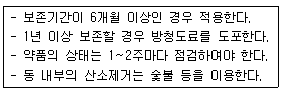
- 건조보존법
- 만수보존법
- 질소보존법
- 특수보존법
(정답률: 69%)
90. 보일러 청소에 관한 설명으로 틀린 것은?
- 보일러의 냉각은 연화적(벽돌)이 있는 경우에는 24시간 이상 걸려야 한다.
- 보일러는 적어도 40℃이하까지 냉각한다.
- 부득이하게 냉각을 빨리시키고자 할 경우 찬물을 보내면서 취출하는 방법에 의해 압력을 저하시킨다.
- 압력이 남아 있는 동안 취출밸브를 열어서 보일러 물을 완전 배출한다.
(정답률: 61%)
91. 점식(pitting)에 대한 설명으로 틀린 것은?
- 진행속도가 아주 느리다.
- 양극반응의 독특한 형태이다.
- 스테인리스강에서 흔히 발생한다.
- 재료 표면의 성분이 고르지 못한 곳에 발생하기 쉽다.
(정답률: 71%)
92. 보일러에서 사용하는 안전밸브의 방식으로 가장 거리가 먼 것은?
- 중추식
- 탄성식
- 지렛대식
- 스프링식
(정답률: 55%)
93. 맞대기 이음 용접에서 하중이 3000kg, 용접 높이가 8mm일 때 용접 길이는 몇 mm로 설계하여야 하는가? (단, 재료의 허용 인장응력은 5kg/mm2이다.)
- 52mm
- 75mm
- 82mm
- 100mm
(정답률: 63%)
94. 급수조절기를 사용할 경우 층수 수압시험 또는 보일러를 시동할 때 조절기가 작동하지 않게 하거나, 모든 자동 또는 수동제어 밸브 주위에 수리, 교체하는 경우를 위하여 설치하는 설비는?
- 블로우 오프관
- 바이패스관
- 과열 저감기
- 수면계
(정답률: 79%)
95. 구조상 고압에 적당하여 배압이 높아도 작동하며, 드레인 배출온도를 변화시킬 수 있고 증기누출이 없는 트랩의 종류는?
- 디스크(disk)식
- 플로트(float)식
- 상향 버킷(bucket)식
- 바이메탈(bimatal)식
(정답률: 52%)
96. 2중관식 열교환기 내 68kg/min의 비율로 흐르는 물이 비열 1.9kJ/kgㆍ℃의 기름으로 35℃에서 75℃까지 가열된다. 이 때, 기름의 온도는 열교환기에 들어올 때 110℃, 나갈 때 75℃이라면, 대수평균온도차는? (단, 두 유체는 향류형으로 흐른다.)
- 37℃
- 39℃
- 61℃
- 73℃
(정답률: 38%)
97. 다음 중 횡형 보일러의 종류가 아닌 것은?
- 노통식 보일러
- 연관식 보일러
- 노통연관식 보일러
- 수관식 보일러
(정답률: 73%)
98. 열교환기 설계 시 열교환 유체의 압력 강하는 중요한 설계인자이다. 관 내경, 길이 및 유속(평균)을 각각 Di, ℓ, u로 표기할 때 압력강하량 △P와의 관계는?
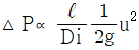
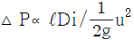
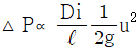
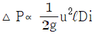
(정답률: 57%)
99. 고온부식의 방지대책이 아닌 것은?
- 중유 중의 황 성분을 제거한다.
- 연소가스의 온도를 낮게 한다.
- 고온의 전열면에 내식재료를 사용한다.
- 연료에 첨가제를 사용하여 바나듐의 융점을 높인다.
(정답률: 58%)
100. 대향류 열교환기에서 가열유체는 260℃에서 120℃로 나오고 수열유체는 70℃에서 110℃로 가열될 때 전열면적은? (단, 열관류율은 125W/m2ㆍ℃이고, 총열부하는 160000 W이다.)
- 7.24m2
- 14.06m2
- 16.04m2
- 23.32m2
(정답률: 42%)
=273*100*{1.29/(273+20)-1.35/(273+210)}
=43.89